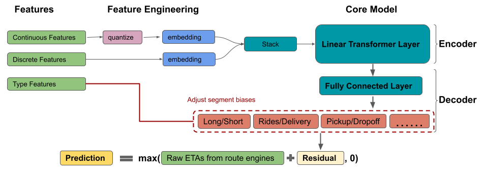
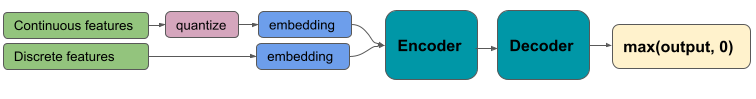
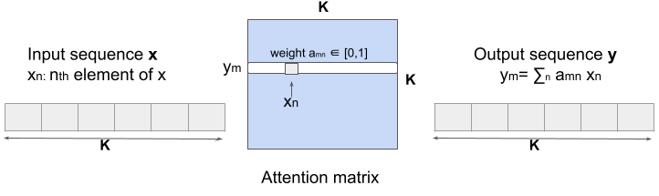
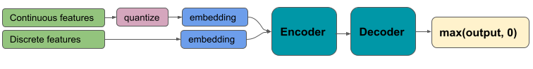

17 Tabular
17.1 Misc
- Resources
- Raschka’s list of DL tabular papers
- Summaries, links to code if available
- Raschka’s list of DL tabular papers
- Guide for suitable baseline models: link
- Questions that I should be able to answer
- How to manage the convergence mechanism in the training process?
- How to apply transfer learning on a pre-trained network?
- How to minimize redundant computation?
- How to reduce the sensitivity of a deep learning technique?
- Numerics
- neural networks treat numerical inputs as continuous variables. Meaning:
- higher numbers are “greater than” lower numbers
- numbers that are similar are treated as being similar items.
- Okay for a variable like “age” but is nonsensical when the numbers represent a categorical variable (embeddings solve the categorical encoding problem)
- neural networks treat numerical inputs as continuous variables. Meaning:
- Ablation Study - a procedure where certain parts of the network are removed, in order to gain a better understanding of the network’s behaviour. Usually pertains to DL research.
17.2 Preprocessing
- Continuous
- Standardize
- Bin
- a network with discretized features may have an advantage because it doesn’t have to spend any of its parameter budget learning to partition the input space
- “Gradient Boosted Decision Tree Neural Network” (paper) and Uber (See Uber ETA below) found quantile buckets provided better accuracy than equal-width buckets
- Potential reason: “maximized entropy: for any fixed number of buckets, quantile buckets convey the most information (in bits) about the original feature value compared to any other bucketing scheme”
- Logging can create more compact ranges, which then enables more efficient neural network training
17.3 Paper Summaries
From pytorch-widedeep, deep learning for tabular data IV: Deep Learning vs LightGBM
- Experiment compared LightGBM performance vs a bunch of tabular data designed DL algorithms from pytorch-widedeep LIB (including TabNet)
- LightGBM destroyed them
- “the DL algorithm that achieves similar performance to that of LightGBM is a simple Multilayer Perceptron (MLP)”
- “In my experience, DL models on tabular data perform best on sizeable dataset that involve many categorical features and these have many categories themselves.”
- Cases where DL models can complement ML models for tabular data
- Using the categorical feature embeddings from DL models as features in other models
- I don’t get this. This article makes it sound like they’re an artefact of the DL model itself. I just always thought this was a preprocessing step.
- I wonder how these are produced and extracted from the model.
- “the embeddings acquire a more significant value, i.e. we learn representations of those categorical features that encode relationships with all other features and also the target for a specific dataset. Note that this does not happen when using GBMs. Even if one used target encoding, in reality there is not much of a learning element there (still useful of course).”
- “Assume that you have a dataset with metadata for thousands of brands and prices for their corresponding products. Your task is to predict how the price changes over time (i.e. forecasting price). The embeddings for the categorical feature brand will give you information about how a particular brand relates to the rest of the columns in the dataset and the target (price). In other words, if given a brand you find the closest brands as defined by embeddings proximity you would be”naturally” and directly finding competitors within a given space (assuming that the dataset is representative of the market).”
- I don’t get this. This article makes it sound like they’re an artefact of the DL model itself. I just always thought this was a preprocessing step.
- Improve performance on a small dataset by “transferring”(?) whats learned from using a DL model on a similar much larger dataset
- The transferring comes from Transfer learning which I have no idea how it works.
- “Assume you have a large dataset for a given problem in one country but a much smaller dataset for the exact same problem in another country. Let’s also assume that the datasets are, column-wise, rather similar. One could train a DL model using the large dataset and”transfer the learnings” to the second, much smaller dataset with the hope of obtaining a much higher performance than just using that small dataset alone.”
- Using the categorical feature embeddings from DL models as features in other models
- Experiment compared LightGBM performance vs a bunch of tabular data designed DL algorithms from pytorch-widedeep LIB (including TabNet)
(Raschka summary) On Embeddings for Numerical Features in Tabular Deep Learning (paper, code)
Instead of designing new architectures for end-to-end learning, the authors focus on embedding methods for tabular data: (1) a piecewise linear encoding of scalar values and (2) periodic activation-based embeddings. Experiments show that the embeddings are not only beneficial for transformers but other methods as well – multilayer perceptrons are competitive to transformers when trained on the proposed embeddings.
Using the proposed embeddings, ResNet, multilayer perceptrons, and transformers outperform CatBoost and XGBoost on several (but not all) datasets.
Small caveat: I would have liked to see a control experiment where the authors trained CatBoost and XGboost on the proposed embeddings.
(Raschka summary) Why do tree-based models still outperform deep learning on tabular data? (paper)
The main takeaway is that tree-based models (random forests and XGBoost) outperform deep learning methods for tabular data on medium-sized datasets (10k training examples). The gap between tree-based models and deep learning becomes narrower as the dataset size increases (here: 10k -> 50k).
Solid experiments and thorough investigation into the role of uninformative features: uninformative features harm deep learning methods more than tree-based methods.
Small caveats: some of the recent tabular methods for deep learning were not considered; “large” datasets are only 50k training examples (small in many industry domains.)
Experiments based on 45 tabular datasets; numerical and mixed numerical-categorical; classification and regression datasets; 10k training examples with balanced classes for main experiments; 50k datasets for “large” dataset experiments.
17.4 Architectures
- DeepETA: Uber’s ETA model 
- Model for residual calculation
Encoder-Decoder architecture with self-attention (article)
- Transformer type of architecture (Also see NLP, Transformers)
Processing
- Continuous features were quantile binned. Then both binned numerics and categoricals are embedded.
- Latitude and longitude was binned and multi-feature hashed (See Feature Engineering, Geospatial)
Self-attention in transformers is a sequence-to-sequence operation that takes in a sequence of vectors and produces a reweighted sequence of vectors
y is the outcome, x is the predictor, K is the number of features
Attention matrix calculation has quadratic complexity, O(K2d) (I think d is the number of rows).
- Faster alternatives that linearize the self-attention calculation: linear transformer, linformer, performer
- linear transformer’s time complexity is O(Kd2) and uses kernel trick to bypass attention matrix calculation
- If K > d, then the linear transformer is faster
- linear transformer’s time complexity is O(Kd2) and uses kernel trick to bypass attention matrix calculation
- Faster alternatives that linearize the self-attention calculation: linear transformer, linformer, performer
Utilizes feature sparsity for speed (any one prediction touches only about 0.25% of the model’s parameters)
- “Handful” of layers
- Most parameters are in embedding lookup tables
- Discretizing numerics
- Multi-feature hashing
- DeepETA simply quantizes the coordinates and performs a hash lookup, which takes O(1) time.
- by precomputing partial answers in the form of large embedding tables learned during training, we reduce the amount of computation needed at serving time.
- In comparison, storing embeddings in a tree data structure would require O(log N) lookup time, while using fully-connected layers to learn the same mapping would require O(N2) lookup time
- DeepETA simply quantizes the coordinates and performs a hash lookup, which takes O(1) time.
- “Handful” of layers
Decoder is a fully connected neural network with a segment bias adjustment layer
- Bias adjustment layers improve raw predictions when there’s a lot of variance in the outcome between groups
- e.g. distribution of absolute errors varies by a lot across delivery trips vs rides trips, long vs short trips, pick-up vs drop-off trips, and also across global mega-regions
- Other approaches
- Adding group features - outperformed by the bias adj layer
- multi-task decoder - didn’t meet latency requirements
- ReLU at output to force predicted ETA to be positive;
- Clamping to reduce the effect of extreme values
- Bias adjustment layers improve raw predictions when there’s a lot of variance in the outcome between groups
- Model for residual calculation